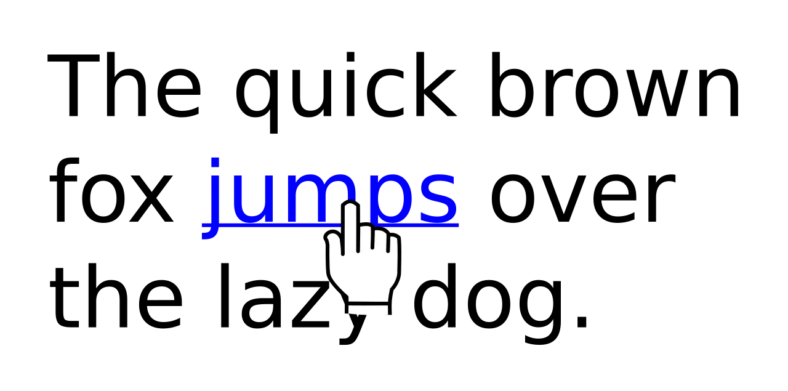

Short answer
A crawl path is an anchor with an href in the HTML, pointing at a URL that returns a document.
The diagram shows one document pointing at another. That is the whole mechanism. A menu drawn as spans with click handlers does not point. A button that assigns location in script does not point until the script runs, and may not point for every crawler. SEO Health counts anchors. It does not count click handlers as links.
Definition
The href should be the canonical URL, not a redirect chain and not a javascript: URL. Target and styling do not create the path. Empty href or href="#" is an anchor that goes nowhere. Internal discovery of orphans fails when the only references are these non-paths.
How the link is a path, not a score
Use real anchors to canonical URLs for every document you expect a crawler to discover.
Footer, breadcrumb, body, and pagination links are all paths if they are anchors. A single path from the homepage through a hub to the document is enough to start. More anchors help people. They are not a juice calculation, and this page will not invent one. Broken anchors are the link-rot finding. Missing anchors are the orphan finding.

What to check
- href attributes present in the raw HTML
- Targets that are canonical URLs
- No javascript: or empty href used as navigation
- Hubs that link onward with anchors
- One hub URL checked in view-source
A practical example
The resources hub is a grid of cards. Each card is a div with an onclick. View-source contains no href. The repair makes each card an anchor to the canonical article URL and leaves the visual design. A crawler can then follow the hub. The click handler can remain as progressive decoration if the anchor exists.
What this does not claim
Real anchors do not guarantee rankings or citations.
Where Mika Visibility files this
Mika Visibility treats internal links as SEO Health discovery paths. An orphan has no internal link. A broken link wastes the path. Neither finding is a rank, and neither is a GEO score. Descriptive anchors help a person and a crawler tell pages apart. They do not manufacture authority numbers.
The diagram is one document pointing at another, which is the path the audit looks for in HTML.
FAQ
What is a crawl path?
A crawl path is an anchor with an href in the HTML, pointing at a URL that returns a document.
What should an href point at?
Use real anchors to canonical URLs for every document you expect a crawler to discover.
Do real anchors guarantee rankings?
Real anchors do not guarantee rankings or citations.
Next step
Run a structured SEO + GEO audit to see health findings, growth gaps, and a blueprint you can act on.
Clearer entities, answers, evidence, and context make pages easier to understand and reference. Results in any answer product are not guaranteed.